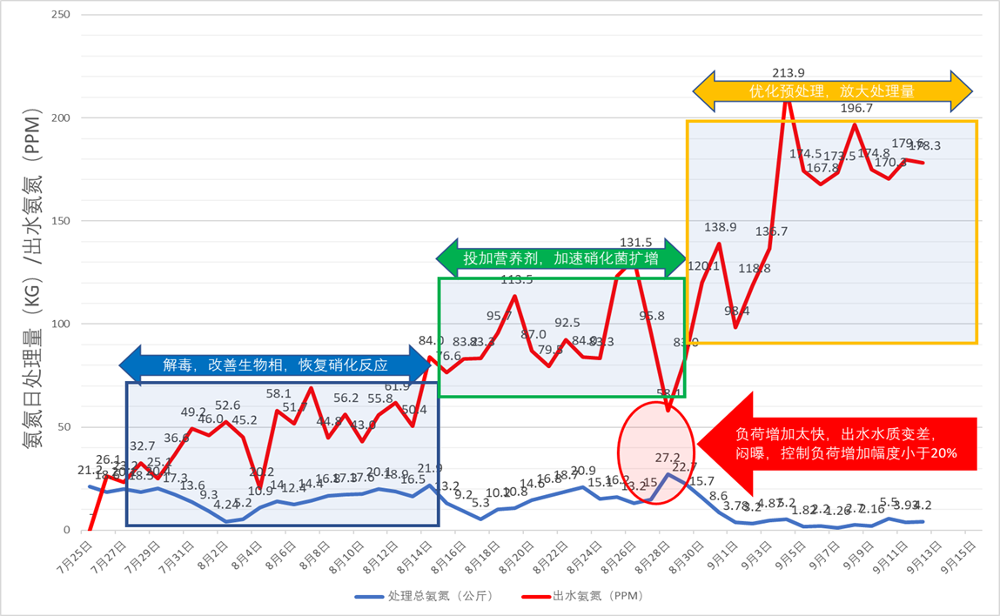

首先针对以上的问题，我们首先要知道什么是氨氮以及其来源？氨氮（简称NH3-N），指水中以游离氨（NH3）和铵盐（NH4+）形式存在的氮，两者的组成比决定于水的PH值和温度，当PH值偏高时，游离氨的比例较高反之，则铵盐的比例较高，水温则相反。其通常是由于在氧气不足时含氮有机物分解而产生，或是由于氮化合物被反硝化菌还原而生成。氨氮主要来源于钢铁、石化、焦化、合成氨、发电、水泥等化工厂排放工业废水以及生活污水等。

转载请注明半点科技网站地址：www.dropletech.net